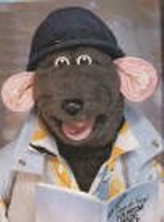

|
Where Are They Now? |
|
Number Twenty-Two - Roland Rat |
|  |
'Yeeeeaaaayyy, ratfans!'
Of all the many entertainers to have graced our screens, none has been quite as influential as Roland Rat. From his humble beginnings on TV-AM, he was so immediately popular as to be given his own TV show. Roland started out on the stand-up comedy scene in the early eighties, playing to packed working men's clubs, his act was drastically toned-down for television. It's a little known fact that Roland Rat's real name is in fact Robert Timson. While looking for a stage name in the early eighties, he happened upon the name of Formula One driver Roland Ratzenberger, and coined a shortened form that put his audience at ease by making light of his hideously-deformed nose. Following his television successes in the eighties, culminating in his own series on BBC One, Roland turned, as so many celebrities do, to the excesses of hard drinking and hard drugs. (Claims that he also entertained hard women have never been substantiated.) After a sordid expose by The Sun, Roland lost his plum TV slot, and quickly slid from public view. Recently Roland has returned to the small screen, thanks to Channel Five. Having recovered from his cocaine addiction (a habit easily- formed, for obvious reasons) with the support of long-time girlfriend, Glenis, Roland has become a born-again Christian, bringing an air of spiritual enlightenment to each and every one of his present-day TV appearances. What a star. |
| Back to Pssst! |